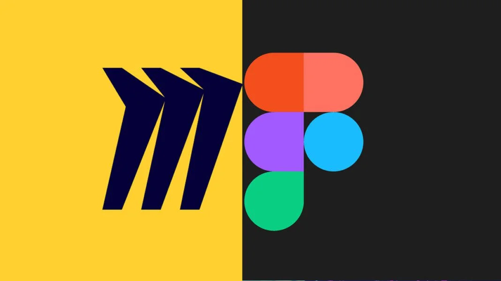
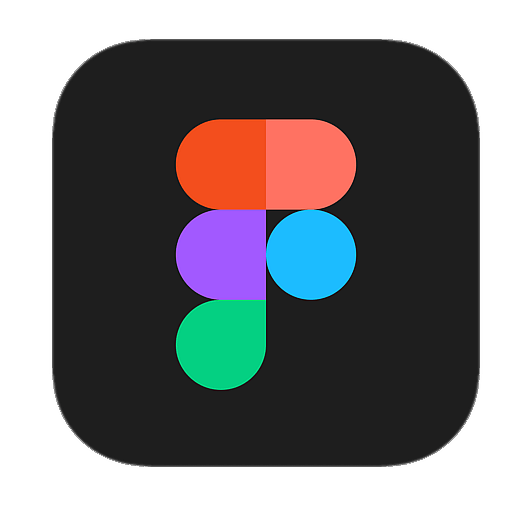

← Voltar para Aulas
### Faculdade Donaduzzi ## Aula 07 - 08: Ideação e Prototipação ### Guia de Ferramentas: Miro e Figma <small>Prof. Guilherme de Araujo Gabriel - 1º Semestre</small> <p></p>
<div style="text-align: left;"> ## O "Degrau Cognitivo" - **Passo 1 (Miro/Papel):** Resolver o problema do usuário. Foco exclusivo na jornada, navegação e arquitetura da informação (Baixa Fidelidade). - **Passo 2 (Figma):** Resolver o problema da interface. Foco em cores, tipografia, alinhamento e estética (Alta Fidelidade).
<div style="text-align: left;"> ## O "Degrau Cognitivo" > "Por que não pular direto para o Figma? Porque é muito doloroso jogar fora uma tela linda que levou 5 horas para ser feita só porque o fluxo estava errado!" </div>
## Guia de Sobrevivência: Miro <div style="text-align: left; font-size: 0.9em;"> - O Miro é nosso quadro branco digital. Onde errar é rápido e barato. - **Ferramentas Essenciais:** - **<a href="https://help.miro.com/hc/pt-br/articles/4404066687122-Miro-para-idea%C3%A7%C3%A3o-e-brainstorming" target="_blank">Miro para Ideação e Brainstorming</a>** - **<a href="https://help.miro.com/hc/pt-br/articles/26654269713682-Miro-Prototypes" target="_blank">Guia de Protótipos no Miro</a>** - **<a href="https://miro.com/templates/miro-basics-guide-for-new-participants/" target="_blank">Miro Basics: Guia para Novos Participantes</a>** </div> <img src="./assets/2_miro.png" width="250" style="display: block; margin: 0 auto;">
Miro: Ideação e Colaboração
Foco: Quadro Branco e Mapeamento de Ideias
## Guia de Sobrevivência: Figma <div style="text-align: left; font-size: 0.9em;"> - O Figma é a ferramenta padrão da indústria para levar esboços para a alta fidelidade. - **Ferramentas Essenciais:** - **<a href="https://blog.cubos.academy/figma-para-iniciantes/" target="_blank">Figma para Iniciantes: Guia de Design Interativo</a>** - **<a href="https://velx.com.br/insights/primeiros-passos-no-figma-5-dicas-de-como-iniciar/" target="_blank">Primeiros Passos no Figma: 5 Dicas para Começar</a>** - **<a href="https://help.figma.com/hc/en-us/sections/30880632542743-Figma-Design-for-beginners" target="_blank">Figma Design for beginners</a>** </div> <p></p>
Figma: Mockups e Prototipagem
Foco: Design de Interface e Componentes